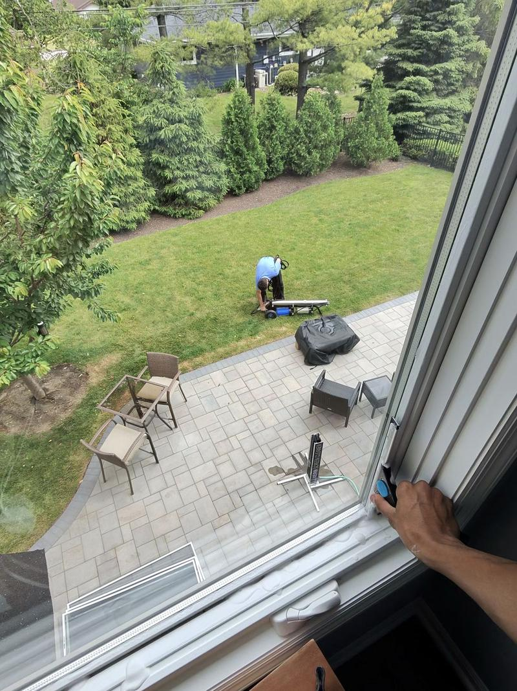

Streak-free interior and exterior window cleaning with pure deionized water. Serving Norridge homes in 60706. Licensed, insured and streak-free guaranteed.
We clean the outside of your windows with a water-fed pole system and deionized (pure) water, scrubbing glass, frames and sills with nylon and boar-hair brushes. Pure water has no minerals, so it dries spot-free with no soap left behind. Inside, we use professional squeegees and solution, then wipe down the frames and sills.
Every home is different, so we always give you an exact, free quote before any work starts. New customers get 10% off their first cleaning.
Get My Norridge Quote
ClearSide Exteriors, LLC is fully licensed and insured, so you are covered on every job.
If you see a streak or anything we missed, we come back and fix it at no charge.
Based in Glenview and serving the North Shore for 4+ years, with 600+ homes serviced.
Also serving nearby: Harwood Heights window cleaning, Park Ridge window cleaning, Schiller Park window cleaning.
Yes. We serve all of Norridge (60706) in Cook County. We clean homes across Norridge, from windows and screens to gutters and driveways. Call or text (224) 985-9327 or request a quote online, and we usually reply within a few hours.
Outside, we use deionized water, which has had all its minerals removed. Spots and streaks are minerals left behind when normal water dries, so pure water dries clean. Inside, we use a professional squeegee and solution.
Exterior window cleaning starts at $150 and interior at $200. Your exact price depends on how many windows you have, how many stories, and access. We give you a free, exact quote before any work starts.
Most North Shore homeowners do twice a year, in spring and fall. Homes near busy roads, trees or construction often do three visits a year, which is our best-value plan.
"They were great. Very professional and efficient! Our windows are spotless."
"These guys came, did a great job, and made it as easy as possible for us."
"Great company to work with. Very informative and professional to deal with."